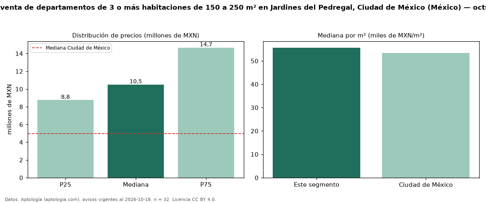

Precio de venta de departamentos de 3 o más habitaciones de 150 a 250 m² en Jardines del Pedregal, Ciudad de México (México) — octubre 2026
En Jardines del Pedregal, Ciudad de México (México), la mediana de precio de venta de departamentos de 3 o más habitaciones de 150 a 250 m² es MXN 10,50 millones, según 32 avisos vigentes. Prácticamente coincide con la mediana de los departamentos de 3 o más habitaciones en venta de Jardines del Pedregal (MXN 10,50 millones, n = 62); este segmento reúne el 52 % de esos avisos. Por metro cuadrado, la mediana es MXN 55.658/m² (n = 32), 2 % por encima de los departamentos de 3 o más habitaciones en venta de Jardines del Pedregal (MXN 54.545/m²). El área mediana anunciada es 201 m². La mediana de todos los departamentos en venta de Ciudad de México es MXN 4,99 millones (+110 % de diferencia). La mitad central de los avisos va de MXN 8,75 millones a MXN 14,66 millones (razón 1,7), una dispersión moderada. Datos: Aptología (aptologia.com), CC BY 4.0 — https://www.aptologia.com/. Archivos: PDF, CSV con las cifras y gráfica PNG.

| Avisos únicos | 32 |
|---|---|
| Percentil 25 | COP 8.750.000 |
| Mediana | COP 10.500.000 |
| Percentil 75 | COP 14.661.269 |
| Mediana por m² | COP 55.657 |
Fuente: avisos vigentes de portales inmobiliarios recopilados por Aptología, deduplicados (mínimo 30 avisos únicos por celda). Precios pedidos, no cerrados. Fecha: 2026-10-18.